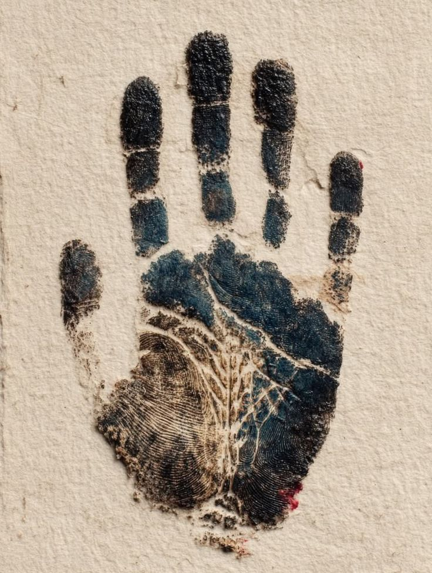

PEOPLE · IDENTITY · BELONGING
Many stories.
A living heritage. A continent of stories.
Remember. Reclaim. Restore.
Enter the CentreWelcome to the AJHC
Across the African continent and its diaspora are stories of Jewish communities, ancient connections, traditions, journeys and lived experiences that deserve to be remembered, documented and celebrated.
The African Jewish Heritage Centre is a space dedicated to preserving and reclaiming overlooked histories and restoring the richness of African Jewish heritage to the wider historical narrative.
Through research, oral histories, cultural preservation, education and community engagement, we bring the past into conversation with the present, creating a living legacy for future generations.
A continent of stories
Discover the people, communities, histories, traditions and journeys that form part of the history of the Jewish people in Africa.
Explore the continent
“I saw two of them in Egypt. They are dark-skinned... and one could not tell whether they keep the teaching of the Karaites, or of the Rabbis, for some of their practices resemble the Karaite teaching... but in other things, they appear to follow the instruction of the Rabbis; and they say they are related to the tribe of Dan.”
— Rabbi Ovadia of Bertinoro, 1488
From Mapungubwe to Great Zimbabwe
Traders, tribesmen, trailblazers
Bilad el-Sudan
THE AJHC JOURNAL
04 / STORIES & PERSPECTIVESA CONTINENT OF VOICES
“Biblical Hebrew has no word that means ‘history’ (the closest equivalent is divrei hayamim, ‘chronicles’). Instead it uses the root zachor, meaning ‘memory’.”
— Rabbi Lord Jonathan Sacks

Watch & Listen
Discover African Jewish heritage through films, interviews, conversations and first-hand accounts.
Films, interviews and first-hand accounts
Our Watch & Listen collection is being prepared. Check back soon.Our work
Preserving heritage. Inspiring leadership. Building the future.
An immersive Jewish leadership and cultural education camp for young people.
Documenting histories through research, oral histories, photography and community knowledge.
Creating opportunities to engage with heritage and develop leadership skills.
Building relationships and spaces for cultural exchange and shared learning.
Read & discover
“Write this as a memorial in a book...”
Exodus 17:14
The AJHC Store
AJHC COLLECTIVE / 01
Every purchase supports the AJHC's work.
STORE PREVIEW — CHECKOUT NOT YET AVAILABLE


IDENTITY / HERITAGE / BELONGING
Let's start a conversation
Have a question, a story to share, an idea for collaboration or an interest in supporting the African Jewish Heritage Centre? We'd love to hear from you.
info@africanjewishheritagecentre.com